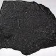

Mineral Grimoire
Rudraksha Seed
An organic seed sacred to Indian traditions and Hindu spiritual practices, the Rudraksha Seed takes its name from Sanskrit: "Rudra" (another name for Lord Shiva) and "aksha" (meaning "eye"). It is classified as organic rather than mineral, with no Mohs hardness rating.
Origin
Australia, China, Guam, India, Indonesia, Malaysia, Nepal. There are more than 300 species of the rudraksha tree found across the world, mainly in Southeast Asian countries, with more than 35 species in India alone. A single tree bears upward of 1,000 seeds each year.
Appearance
Round to slightly oblong seeds with a naturally textured, ridged surface. Each seed contains a natural hole through its center, making it easy to string into malas or prayer strands. The surface typically ranges from tan to dark brown, and the number of "faces" (mukhis, or natural divisions on the surface) varies, with each count carrying its own spiritual significance.
Magickal Properties
Rudraksha Seeds are powerful tools for attracting financial wealth, success, health, and prosperity. They create a cocoon of protection around the bearer, shielding against negative energies. For travelers, they help soothe the transition into new places and assist in acclimating to different cultural traditions and etiquette.
For advanced practitioners, wearing Rudraksha Seeds in jewelry enhances spiritual insight and can bring prophetic dreams, healing, and longevity. In ayurvedic traditions, soaking the seeds in water and drinking the infusion is said to soothe fevers associated with colds and flu, balance excessive hormones, and offer anti-inflammatory benefits.
Chakra Work
Rudraksha Seeds resonate with the Solar Plexus Chakra, the seat of personal power, willpower, and manifestation. Wear them as a mala and recite mantras or affirmations to activate this energy center and align your intentions with divine will. It is also said that adorning the arms with Rudraksha bracelets appeals to the Hindu goddess Durga, who relieves fears relating to death and blesses the bearer with a long, healthy life.
Healing
In ayurvedic practice, Rudraksha Seeds soaked in water produce an infusion believed to soothe fevers, balance hormones, and reduce inflammation. Wearing them is associated with longevity and overall vitality. Their protective energy also supports emotional healing by shielding the wearer from negativity and fostering a sense of safety and spiritual well-being.
Spellworking
Rudraksha Seeds are traditionally strung into malas of 108 beads and used to recite mantras appealing to Hindu deities for success, wisdom, health, and more. Reciting the mantra Om Kleem Namah 108 times with a Rudraksha mala is said to enhance wealth and prosperity, guarding against all forms of poverty, both physical and spiritual. They partner well with  Citrine for abundance and solar energy, Clear Quartz for amplification,
Citrine for abundance and solar energy, Clear Quartz for amplification,  Copper for energy conduction, and
Copper for energy conduction, and  Gold for divine connection and prosperity.
Gold for divine connection and prosperity.
Lore
Legend tells that Lord Shiva opened his eyes after 1,000 years of deep meditation and wept tears that fell to the earth and became Rudraksha Seeds. These seeds have been used as prayer beads for thousands of years across Hindu and Buddhist traditions. The natural hole through the center of each seed was seen as a sign of divine intention, as if the seeds were made to be strung and held in devotion. Because they resonate with all astrological signs, Rudraksha Seeds are considered universally sacred, a bridge between the practitioner and the Divine regardless of one's birth chart.
Magickal Message
"You are one with the Universe and divinely guided. Work with me to have all of your intentions and affirmations heard by the Divine."